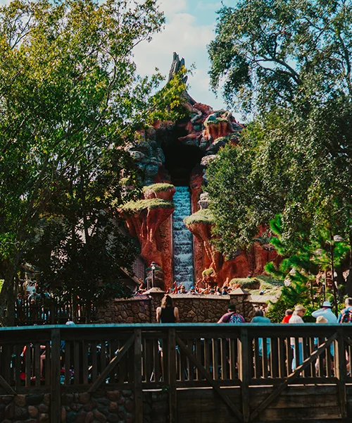
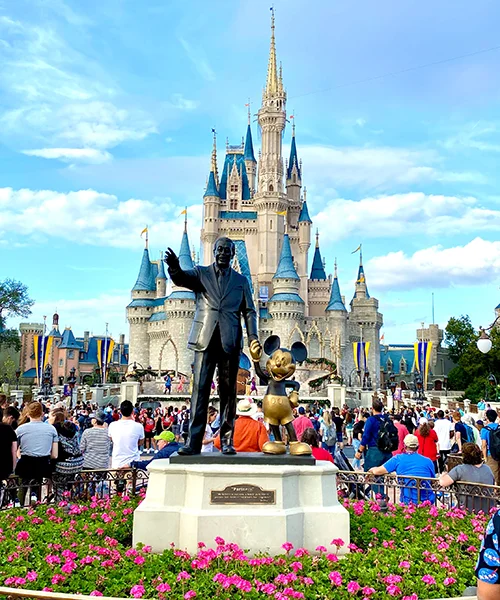
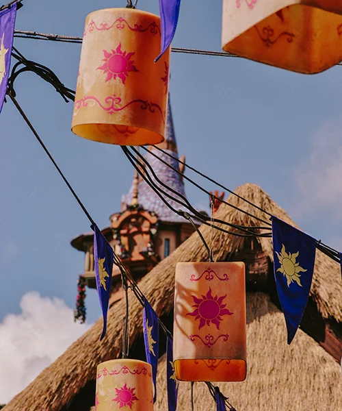
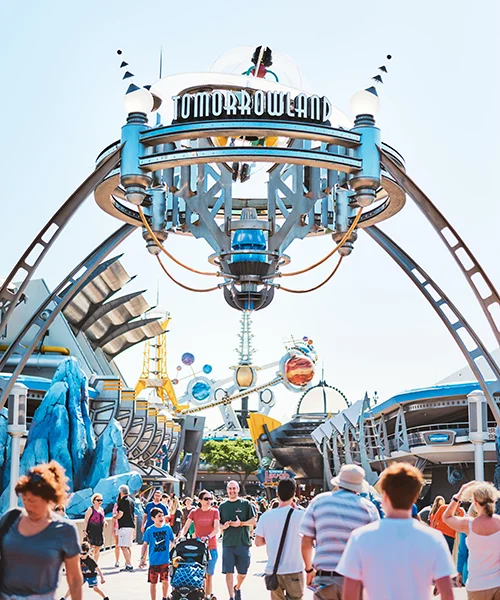
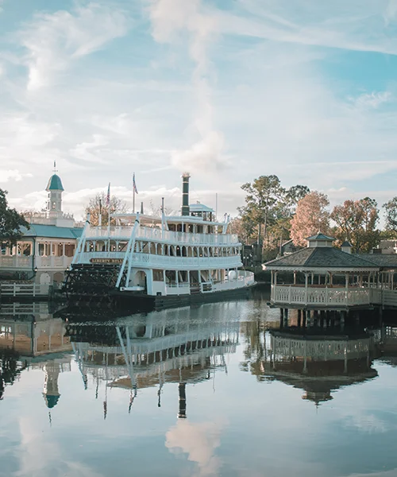

🤝🏼 Come join us for the chamber meet and greet Wednesday at 7:00 p.m.
Main Street USA
Main Street USA is the first sight that you encounter when you first enter the Magic Kingdom at Walt Disney World. This is also the street area that you see on both sides as you look down upon the view of Cinderella’s Castle. It is no doubt that the area would be impressive since this is your first impression of the park. I love Main Street and could spend a ton of time enjoying the shopping, treats, entertainment, and views.
Central Hub
The Magic Kingdom Hub is known as a central point in the park before Magic Kingdom branches out into its famous themed lands (Fantasyland, Adventureland, Tomorrowland, etc.) You can think of this as a bicycle wheel where all of the tiny metal bars (spokes) intersect at the middle of the wheel at what typically looks like a metal cap (hub).The name Hub comes from what's known as the Hub-Spoke distribution model. Simply put, spokes are the paths that extend out from a central meeting point, known as a Hub. While the themed lands of the Magic Kingdom are not all directly connected to each other, the themed lands are almost all connected to the Magic Kingdom Hub. It's a very open, circular area that's popular for fireworks and parade viewing, as well as a meeting point for friends and family before heading off to experience the attractions of Magic Kingdom.
Fantasy Land
Fantasyland is one of the most popular lands within the Magic Kingdom for its size, number of attractions, and characters. It has the highest presence of Disney characters and direct representation from so many of our favorite movies and stories.
Tomorrow Land
Tomorrowland is a land within the Magic Kingdom that helps to transport us to a community of tomorrow. The attractions, characters, and experiences fit in with the theme of the land. The land had a lot of history and special touches from Walt himself.
Frontier Land
Frontierland is the area of the Magic Kingdom where you can experience the “wildest ride in the wilderness” and a lot of other rootin’ tootin’ fun! The theme taken from the “wild west” is a lot of fun and is an experience that you won’t find in many other places.
Adventure Land
Adventureland is a lovely area within the Magic Kingdom. The area is so green and lush, and you have the sounds of energizing drums and beats that you can’t help but feel your adrenaline rise in the area. We love the mix of different countries and experiences and definitely venture here frequently to go on Pirates of the Caribbean!